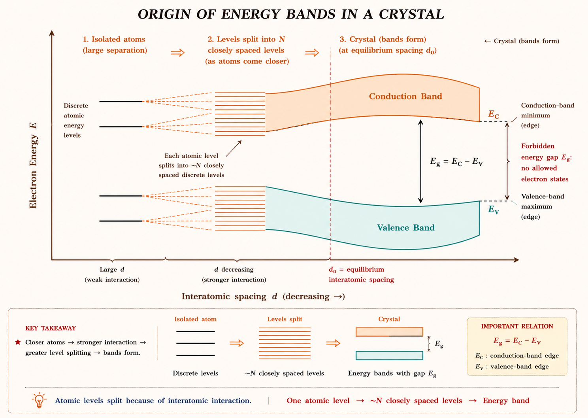
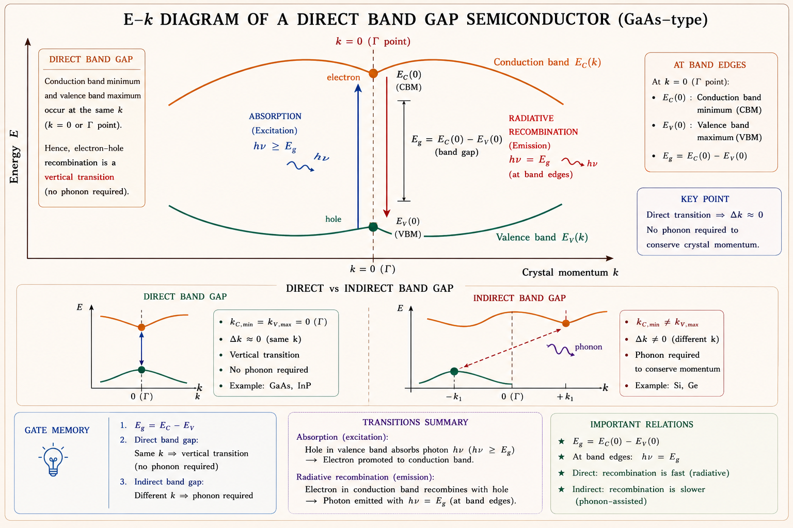
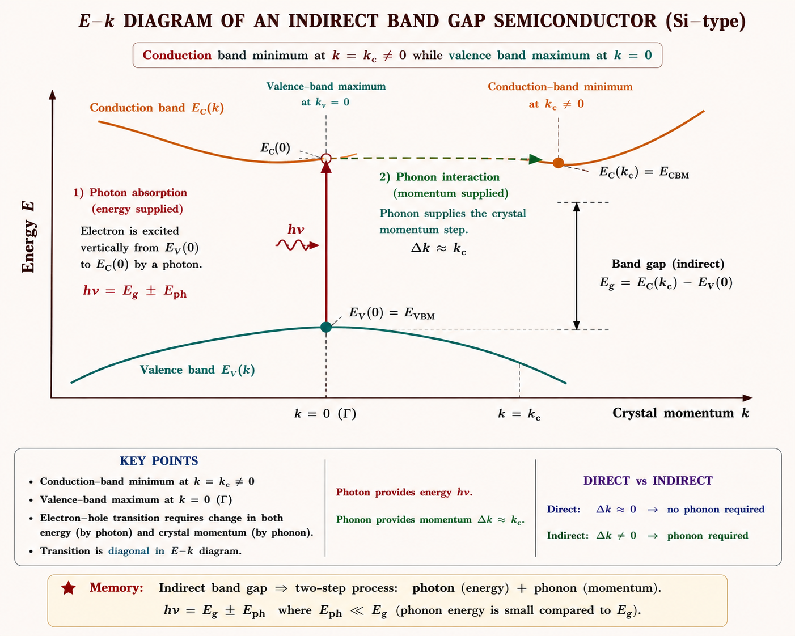
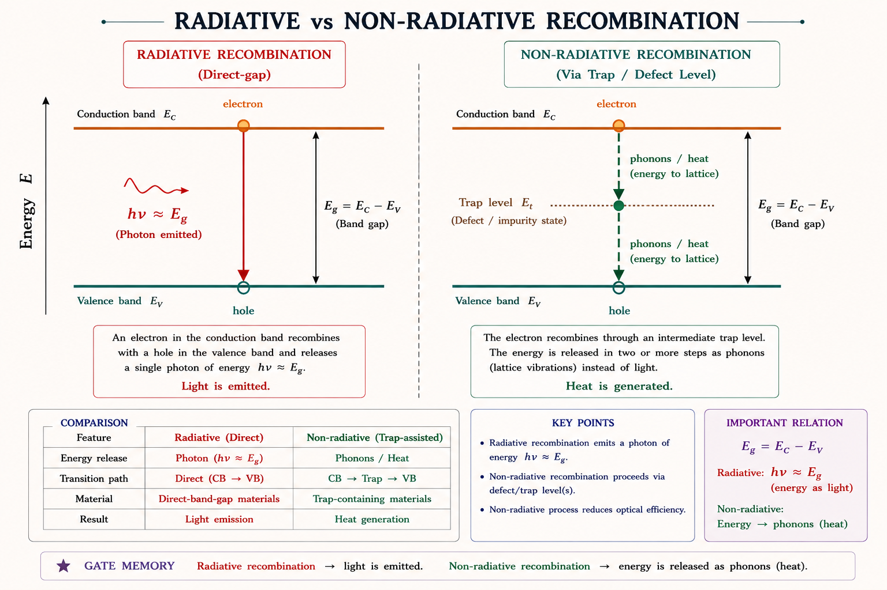

A complete deep-dive into energy band formation, the E–k diagram, momentum–energy relationships, and why the type of band gap decides whether a semiconductor can be used to build an LED, a laser diode, or only a silicon transistor — essential for GATE EC/EE, IES/ESE, and ISRO Scientist/Engineer exams.
Every semiconductor has an energy gap between its valence and conduction bands, but not every semiconductor can emit light. Silicon — the material that powers nearly every processor and transistor on Earth — is almost useless for making an LED or a laser. Gallium Arsenide, a far more expensive and delicate material, is the natural choice for optical sources. The reason is not the size of the band gap but its type — direct or indirect. Getting this classification wrong means picking the wrong material for a photodetector, an LED, or a laser diode. This is a 2–4 mark conceptual + numerical topic that appears in almost every GATE EC/EE cycle.
An electron does not just need enough energy to jump from the valence band to the conduction band — it also needs the right momentum. In quantum mechanical terms, an electron in a crystal is described not by a single energy value but by an energy-versus-crystal-momentum relationship, E(k). Whether the conduction band minimum and the valence band maximum line up at the same crystal momentum decides whether an electron can recombine with a hole in one clean step (emitting a photon) or must involve a third particle — a lattice vibration called a phonon — to conserve momentum. This single geometric fact in the band structure is what separates an efficient light-emitting material from an inefficient one.
Imagine two people playing catch. If both are standing still (matched momentum), the ball transfers cleanly and instantly — this is a direct transition. Now imagine one person is standing still and the other is running sideways at full speed (mismatched momentum). For the ball to be caught, someone must also supply a sideways push at the same instant — a third helper is needed. This is exactly the role of the phonon in an indirect transition: it supplies the "sideways push" of momentum so the electron and hole can meet. Because this three-body event is far less probable than a clean two-body catch, indirect-gap materials recombine radiatively far less efficiently.
Across all these applications, one design rule repeats: if a device must emit light efficiently, its active region must be a direct band gap material. If a device only needs to absorb light or switch current, an indirect band gap material such as silicon works perfectly well and is far cheaper. This chapter builds the band-structure reasoning behind that rule from first principles.
A single isolated atom has sharp, discrete energy levels — electrons can only occupy specific allowed energies, as predicted by solving the Schrödinger equation for one nucleus and its electrons. When a large number of atoms (of the order of Avogadro's number, ~10²³ per cm³) are brought together to form a crystal, the Pauli exclusion principle forbids any two electrons in the combined system from occupying an identical quantum state. Each discrete atomic level therefore splits into a closely spaced cluster of N levels, where N is the number of atoms — and because N is astronomically large, this cluster is, for all practical purposes, a continuous energy band.

At the equilibrium spacing of the actual crystal, the outer (valence) electron levels broaden into the valence band — the highest range of energies that is normally filled with electrons at absolute zero. Above it lies the conduction band, the lowest range of energies that is normally empty. Between them lies the forbidden energy gap E_g, a range of energy values that no electron in a perfect crystal is allowed to possess. An electron can exist in the valence band or the conduction band, but never with an energy strictly inside the gap.
The width of the forbidden gap decides whether a solid behaves as an insulator (E_g ≳ 5 eV, e.g. diamond ≈ 5.5 eV), a semiconductor (E_g roughly 0.1–3.5 eV, e.g. Ge = 0.66 eV, Si = 1.12 eV, GaAs = 1.42 eV), or a conductor (bands overlap, E_g = 0). This chapter assumes the material is already known to be a semiconductor and asks a deeper question: given two semiconductors with a similar-sized gap, why does one emit light efficiently and the other does not?
Students often assume that a "bigger band gap always means better LED material." The magnitude of E_g only fixes the colour (photon wavelength) of emitted light through E_g = hc/λ. Whether the material emits light efficiently at all is governed by a completely separate property — whether the gap is direct or indirect. GaP has almost the same band gap as GaAs but is indirect and is a poor light emitter without special impurity doping (nitrogen-doped GaP), while GaAs is direct and emits efficiently.
Inside a crystal, an electron behaves as a wave that must satisfy Bloch's theorem, and its state is labelled not just by energy but by a crystal momentum (or wave vector) k. The relationship between the allowed energy E and the wave vector k, plotted as E versus k, is called the E–k diagram or band diagram. It is the single most important tool for understanding optical transitions in semiconductors, because it shows simultaneously how much energy and how much momentum an electron carries in a given band.
Locate the lowest point of the conduction band and the highest point of the valence band on the E–k diagram. If both occur at the same value of k (almost always k = 0, the zone centre, labelled Γ), the semiconductor is direct band gap. If they occur at different values of k, the semiconductor is indirect band gap. Everything else in this chapter follows from this one geometric fact.
Students sometimes confuse the k-axis with a spatial coordinate. k is a reciprocal-space (momentum-space) variable with units of inverse length (rad/m), obtained from the electron's Bloch wavefunction \(\psi_k(x) = u_k(x)e^{jkx}\). It is not the electron's position inside the crystal.
In a direct band gap semiconductor, the conduction band minimum and the valence band maximum both occur at the same crystal momentum, k = 0 (the zone centre, Γ point). Gallium Arsenide (GaAs) and Indium Phosphide (InP) — along with most other III–V compound semiconductors — are the classic direct band gap materials used throughout optoelectronics.

Because both band extrema line up at the same k, an electron at the bottom of the conduction band can recombine with a hole at the top of the valence band through a vertical transition on the E–k diagram. The electron's crystal momentum barely changes (Δk ≈ 0), so momentum conservation is satisfied by the photon alone — a photon carries negligible momentum compared to an electron's crystal momentum, so it can supply the required energy without disturbing k. This is a simple two-particle process (electron + photon) and happens on a nanosecond or sub-nanosecond timescale, giving direct-gap materials a high probability of radiative recombination.
| Material | E_g (eV, 300 K) | Type | Typical Use |
|---|---|---|---|
| GaAs | 1.42 | Direct | LEDs, laser diodes, HEMTs, solar cells |
| InP | 1.35 | Direct | 1310/1550 nm laser diodes, HBTs, substrates |
| GaN | 3.4 | Direct | Blue/UV LEDs, power electronics |
| InGaAsP (alloy) | 0.75–1.35 (tunable) | Direct | Telecom laser diodes and photodetectors |
Every practical semiconductor laser diode and every efficient LED uses a direct band gap active region. This is not a coincidence of material availability — it is a direct consequence of the vertical-transition geometry shown in Figure 3.2. Population inversion for laser action fundamentally requires a high radiative recombination rate, which only direct-gap materials can provide at useful efficiency.
In an indirect band gap semiconductor, the conduction band minimum occurs at a different value of crystal momentum than the valence band maximum. Silicon (Si) and Germanium (Ge) — the two workhorse elemental semiconductors of the electronics industry — are both indirect band gap materials. In silicon the conduction band minima lie along the Δ direction near the X point of the Brillouin zone, while the valence band maximum remains at k = 0.

A photon carries a very small momentum compared to the momentum spread of the Brillouin zone (this is proven quantitatively in Section 6). Since a photon alone cannot bridge the momentum gap Δk = k_c between the two band extrema, an indirect recombination event must simultaneously involve a photon (to conserve energy) and a phonon — a quantum of lattice vibration — to conserve crystal momentum. Requiring three particles (electron, photon, phonon) to interact at the same instant is a much lower probability quantum-mechanical event than the two-particle direct transition, so indirect-gap materials have a radiative recombination rate that is typically several orders of magnitude lower than direct-gap materials of comparable band gap.
| Material | E_g (eV, 300 K) | Type | Typical Use |
|---|---|---|---|
| Silicon (Si) | 1.12 | Indirect | ICs, transistors, silicon photodiodes/solar cells |
| Germanium (Ge) | 0.66 | Indirect | High-speed diodes, IR detectors, SiGe HBTs |
| Gallium Phosphide (GaP) | 2.26 | Indirect | Needs N-doping for visible LEDs (indirect-gap exception) |
| Diamond (C) | 5.47 | Indirect | Wide band gap power devices, heat spreaders |
Being a poor light emitter is irrelevant for a transistor or a logic gate, which only needs electrons to move current, not emit photons. Silicon's abundance, its exceptionally stable native oxide (SiO₂) for gate insulation, and mature low-cost fabrication make it the dominant material for digital and analog ICs — even though it can never make an efficient LED or laser diode.
The claim that "a photon cannot supply crystal momentum" is not just a qualitative story — it can be checked numerically, and GATE numericals occasionally ask exactly this. The idea is to compare the momentum a photon carries at the band-gap energy with the momentum span of the Brillouin zone (which is of the order \(\pi/a\), where a is the lattice constant).
Because \(p_{photon} \ll p_{BZ}\), a photon can only connect two states that lie at essentially the same k on the E–k diagram — i.e., a nearly vertical transition. This is why direct transitions (Δk ≈ 0) can proceed with a photon alone, while indirect transitions (Δk = k_c, comparable to \(p_{BZ}\)) cannot — the "shortfall" in momentum must come from somewhere else.
A phonon is a quantized lattice vibration. Unlike a photon, a phonon carries very little energy (typically tens of meV) but can carry crystal momentum comparable to the full Brillouin zone span, because it originates from the mechanical vibration of atoms at the same length scale as the lattice itself. In an indirect transition, the phonon's job is essentially the opposite of the photon's: it supplies the missing momentum \(\Delta k = k_c\) while contributing only a small correction to the energy balance.
The emitted photon's energy in an indirect transition is still approximately E_g (phonon energy is a small correction of a few tens of meV). Students sometimes wrongly assume the phonon carries away most of the transition energy — in reality its role is almost entirely about momentum, not energy.
When an electron in the conduction band recombines with a hole in the valence band, the excess energy E_g must go somewhere. It can either leave the crystal as a photon (radiative recombination) or be dissipated as heat into the lattice through phonons, often via defect or trap energy levels inside the forbidden gap (non-radiative recombination). Which path dominates decides the material's usefulness as a light source.

The overall recombination rate of excess carriers is the sum of radiative and non-radiative rates. The fraction of recombination events that produce a photon is called the internal quantum efficiency:
The long radiative lifetime of silicon is not a defect of the material — it is the direct consequence of the indirect band structure discussed in Sections 5 and 6. Even a perfectly pure, defect-free silicon crystal would still be a poor light emitter, because the limitation is fundamental (momentum mismatch), not just a matter of material quality.
Students sometimes think non-radiative recombination only happens in indirect-gap materials. In reality, even direct-gap materials have some non-radiative recombination through surface states, dislocations, or heavy doping (Auger recombination). What differs is the relative rate — in a good direct-gap material, radiative recombination usually wins the competition, whereas in an indirect-gap material, non-radiative recombination almost always dominates.
Material selection for a real device is a trade-off between band gap type, band gap magnitude (which fixes the operating wavelength for optical devices), cost, and manufacturability. The table below summarises the four materials most frequently referenced in GATE, IES and ISRO question papers.
| Material | E_g (eV) | Direct/Indirect | Peak Emission λ (approx.) | Primary Device Role |
|---|---|---|---|---|
| Silicon (Si) | 1.12 | Indirect | — | ICs, BJT/MOSFET, photodiodes, solar cells (absorber, not emitter) |
| Germanium (Ge) | 0.66 | Indirect | — | Fast small-signal diodes, IR photodetectors, SiGe HBTs |
| Gallium Arsenide (GaAs) | 1.42 | Direct | ≈ 870 nm (IR) | LEDs, laser diodes, HEMT/MESFET, space-grade solar cells |
| Indium Phosphide (InP) | 1.35 | Direct | ≈ 920 nm (substrate); alloys reach 1310/1550 nm | Telecom laser diodes/photodetectors, HBT substrates |
Ask: "Does this device need to emit light?" If yes → material must be direct band gap (GaAs, InP, GaN family, or their alloys). If the device only needs to absorb light (photodiode, solar cell) or purely switch/amplify current (BJT, MOSFET, JFET), an indirect band gap material like silicon works and is usually cheaper, more robust, and easier to integrate at large scale.
A light-emitting diode is a forward-biased p-n junction in which injected minority carriers recombine. LEDs require high radiative efficiency in the depletion/active region, so the active layer is always a direct band gap material. Colour is tuned by alloying: GaAs (IR), AlGaAs (red), GaAsP (red/orange/yellow), GaP:N (green, indirect but nitrogen-doped to allow isoelectronic-trap assisted radiative recombination), and GaN/InGaN (blue, and — via phosphor down-conversion — white).
Laser action additionally requires stimulated emission to dominate over spontaneous emission and absorption, which needs a very high radiative recombination rate to sustain population inversion under continuous carrier injection. This is achievable only in direct band gap materials — no practical continuous-wave semiconductor laser has ever been built from bulk silicon, which is why "silicon photonics" research instead bonds or grows III–V direct-gap material onto silicon platforms for the light-emitting portion of the chip.
Solar cells run the LED process in reverse: they must absorb, not emit. Absorption in an indirect-gap material such as silicon is a phonon-assisted process too, but this only makes silicon a weaker absorber (it needs a thicker wafer, ~100–300 μm, to absorb most incident sunlight), not a non-functional one. Silicon remains the dominant commercial solar cell material because of cost and abundance. Direct band gap materials such as GaAs absorb far more strongly per unit thickness (a few micrometres suffice), which is why space and satellite solar arrays — where mass and radiation hardness matter more than cost — favour multi-junction III–V direct band gap cells.
Silicon and germanium photodiodes are widely used for cost-sensitive visible and near-infrared detection despite being indirect-gap, because a photodetector only needs efficient absorption, not emission. Where very fast response and higher quantum efficiency at telecom wavelengths (1310/1550 nm) is required, direct band gap InGaAs photodiodes are preferred instead.
Students often assume that if a material is a poor emitter it must also be a poor absorber. Absorption is a much less restrictive process than emission because an absorbed photon can promote an electron to any higher-energy conduction band state (not just the exact band minimum), and any leftover momentum mismatch can still be supplied by lattice phonons that are abundantly available at room temperature. This is why indirect-gap silicon still absorbs sunlight reasonably well and remains the dominant solar cell material, even though it is a poor light emitter.
Which one of the following is a direct band gap semiconductor?
Silicon is not used to fabricate LEDs mainly because:
A semiconductor LED emits light of wavelength 620 nm. Its band gap energy is approximately:
In an indirect band gap semiconductor, the phonon involved in electron–hole recombination primarily serves to:
For fabricating a semiconductor laser diode, the active region material must necessarily be:
Identifying direct vs indirect band gap from E–k diagram or material name
Band gap ↔ wavelength conversion using E_g = hc/λ (1240 eV·nm rule)
Material selection reasoning for LEDs, lasers and photodetectors
Role of phonons in momentum conservation for indirect transitions
Radiative vs non-radiative recombination and quantum efficiency
Numerically comparing photon momentum with Brillouin-zone momentum
"Same k-Spot → Straight Shot (photon only) → Direct gap, good LED."
"Different k-Spot → Need a Boost (phonon) → Indirect gap, poor LED."
"GaAs, GaN, InP Glow — Si and Ge just Grow (current, not light)." All the common III–V compound semiconductors used for LEDs/lasers are direct; the two elemental Group IV semiconductors used for transistors are indirect.
1. Confusing band gap size with band gap type: A larger E_g does not make a
material direct — GaP has a similar E_g to GaAs but is indirect.
2. Assuming poor emitters are also poor absorbers: Silicon absorbs visible
light reasonably well (used in solar cells) despite being a poor emitter.
3. Thinking the phonon carries most of the transition energy: The phonon's
role is momentum conservation; its energy contribution is only a small correction to
E_g.
4. Using λ = hc/E_g with E_g in joules and forgetting unit conversion: The
shortcut λ(nm) = 1240/E_g(eV) avoids this error entirely.
5. Forgetting that alloying shifts both E_g and sometimes the direct/indirect
nature: AlGaAs remains direct only up to a certain Al mole fraction, beyond
which it becomes indirect.
CB minimum & VB maximum at same k (usually k = 0). Photon-only transition. High radiative efficiency. Materials: GaAs, InP, GaN.
CB minimum & VB maximum at different k. Needs photon + phonon. Low radiative efficiency. Materials: Si, Ge, GaP, diamond.
\(E_g = hc/\lambda\). Handy form: \(\lambda(\text{nm}) = 1240/E_g(\text{eV})\).
\(p = \hbar k\). Photon momentum ≪ Brillouin-zone momentum \(\hbar\pi/a\) — photon alone cannot bridge large Δk.
Radiative: emits photon (direct-gap dominant). Non-radiative: emits phonons/heat, often via trap levels (indirect-gap dominant).
\(\eta_{int} = \dfrac{1/\tau_{rad}}{1/\tau_{rad}+1/\tau_{nonrad}}\). High for direct-gap materials, very low for silicon.
Needs to emit light? → Direct gap required (LED, laser). Only absorbs/switches current? → Indirect gap is fine (photodiode, solar cell, transistor).
Ge = 0.66 eV, Si = 1.12 eV, GaAs = 1.42 eV, InP = 1.35 eV, GaN = 3.4 eV — all at 300 K.
GaP is indirect but made luminescent via nitrogen isoelectronic-trap doping — a classic GATE/IES trick question material.
Have a doubt about Direct/Indirect Band Gap Semiconductors? Ask anything — GATE concepts, numericals, or exam tips!
All technical content is derived from the following standard textbooks and learning resources. All explanations, derivations, diagrams and examples are original to Aarova AI.